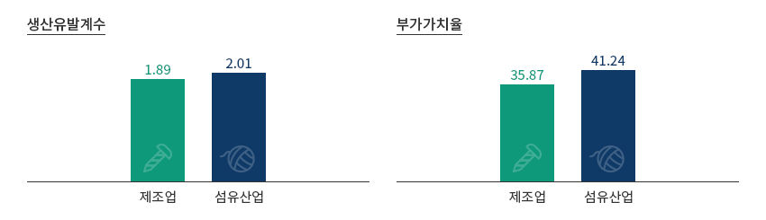
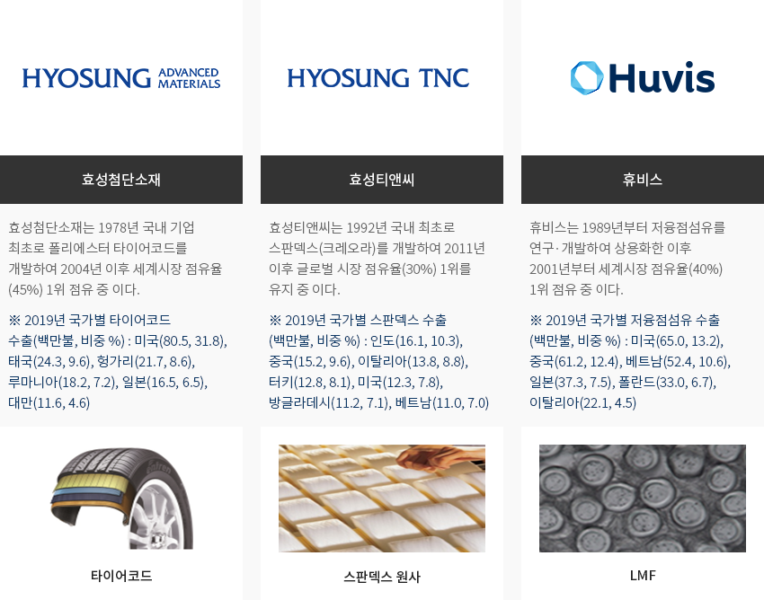
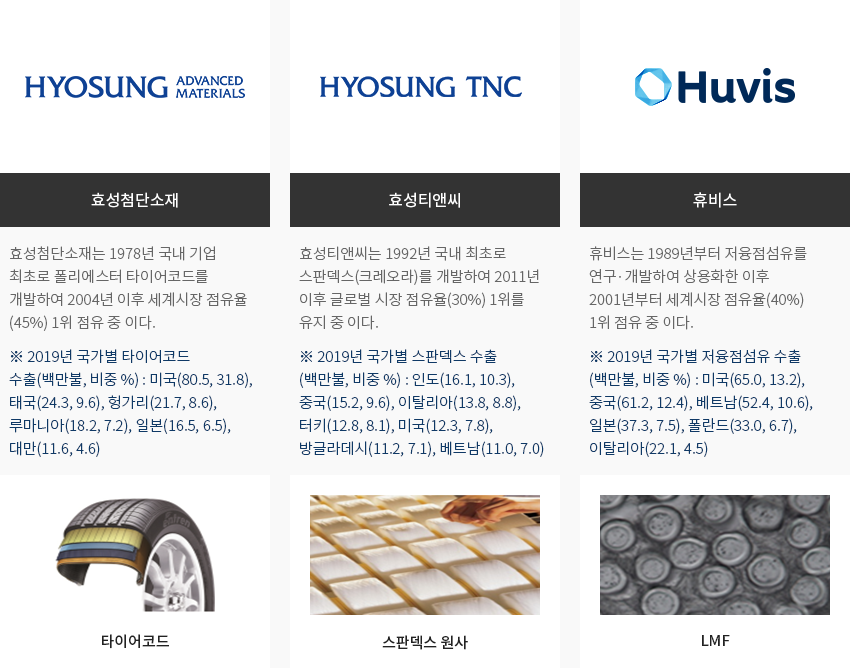
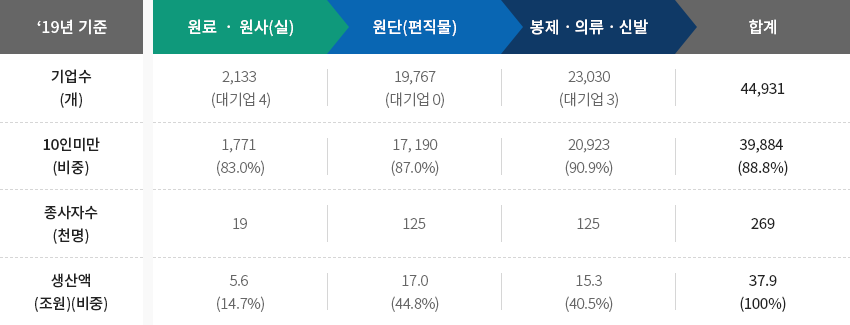
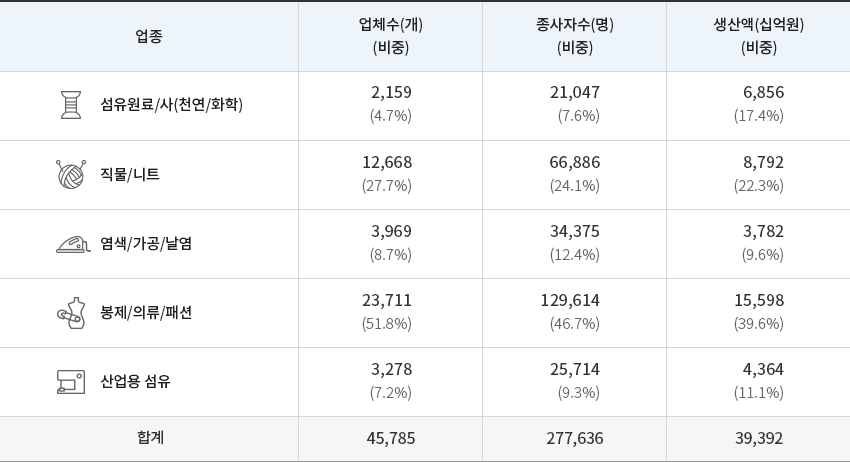
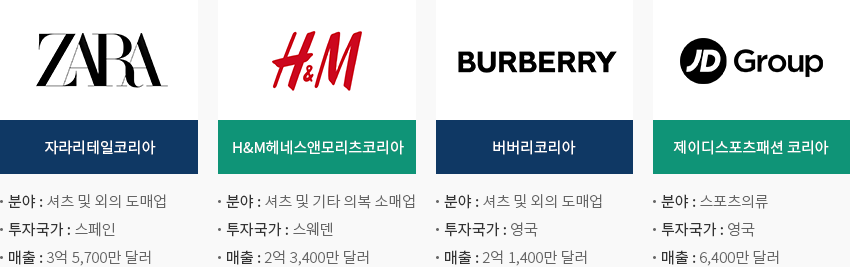
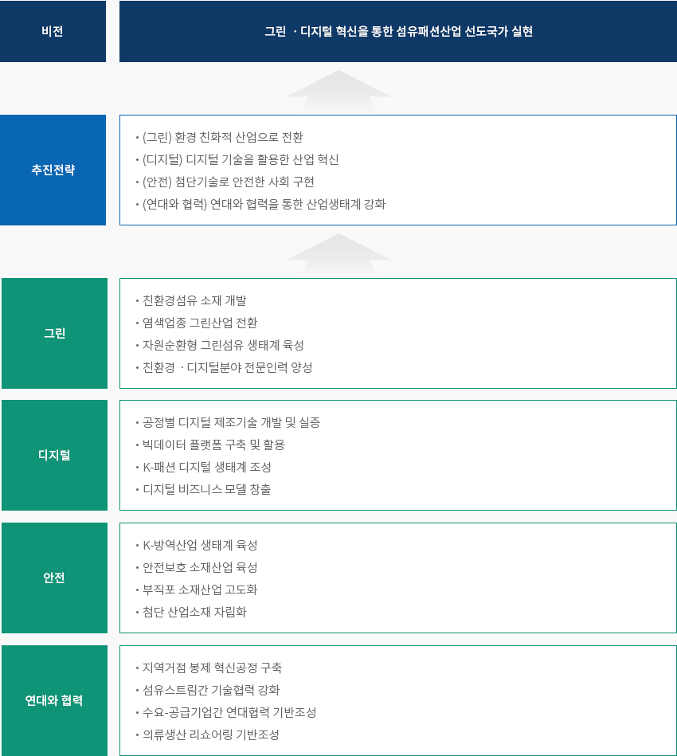
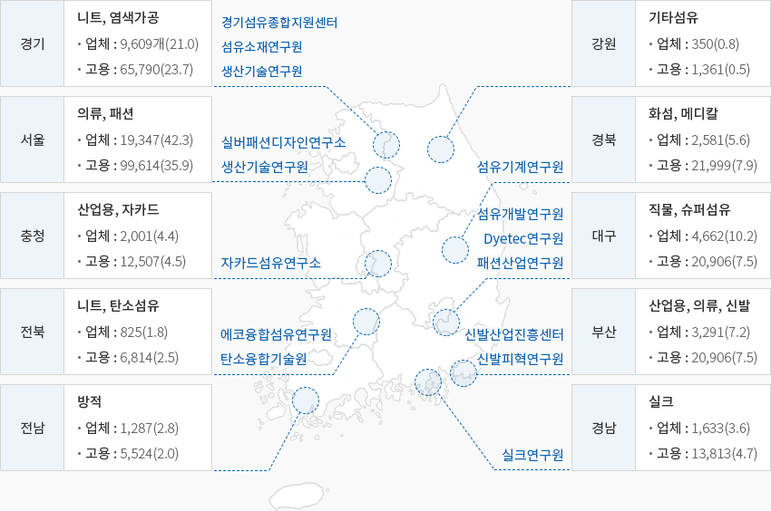

패션
- Home
- Why KOREA
- 산업
- 패션
패션
Fashion
-
타산업과의 융합 전후방 연계 효과가 큰 고부가가치산업 내용닫기타산업과의 융합 전후방 연계 효과가 큰 고부가가치산업국내 섬유패션산업은 타 산업 및 전후방 연계 효과가 매우 큰 산업으로 생산유발계수, 부가가치율이 제조업 평균보다 높고,
반도체 와 같은 핵신산업보다 고용 유발계수가 더 큰 대표적인 고부가가치 고용창출 산업이다."섬유산업의 파급효과"생산유발계수- 제조업 - 1.89
- 섬유산업 - 2.01
부가가치율- 제조업 - 35.87
- 섬유산업 - 41.24
 ※ 자료 : 통계청, 산업연구원 주제별 산업현황 (2020.12)"우리나라 섬유류 세계 1위 품목"
※ 자료 : 통계청, 산업연구원 주제별 산업현황 (2020.12)"우리나라 섬유류 세계 1위 품목"- 효성첨단 소재 - (타이어코드) 효성첨단소재는 1978년 국내 기업 최초로 폴리에스터 타이어코드를 개발하여 2004년 이후 세계시장 점유율 (45%) 1위 점유 중 이다. ※ 2019년 국가별 타이어코드 수출(백만불, 비중 %) : 미국(80.5, 31.8), 태국(24.3, 9.6), 헝가리(21.7, 8.6), 루마니아(18.2, 7.2), 일본(16.5, 6.5), 대만(11.6, 4.6)
- 효성티앤씨 - (스판덱스 원사) 효성티앤씨는 1992년 국내 최초로 스판덱스(크레오라)를 개발하여 2011년 이후 글로벌 시장 점유율(30%) 1위를 유지 중 이다. ※ 2019년 국가별 스판덱스 수출 (백만불, 비중 %) : 인도(16.1, 10.3), 중국(15.2, 9.6), 이탈리아(13.8, 8.8), 터키(12.8, 8.1), 미국(12.3, 7.8), 방글라데시(11.2, 7.1), 베트남(11.0, 7.0)
- 휴비스 - (LMF) 휴비스는 1989년부터 저융점섬유를 연구·개발하여 상용화한 이후 2001년부터 세계시장 점유율(40%) 1위 점유 중 이다. ※ 2019년 국가별 저융점섬유 수출 (백만불, 비중 %) : 미국(65.0, 13.2), 중국(61.2, 12.4), 베트남(52.4, 10.6), 일본(37.3, 7.5), 폴란드(33.0, 6.7), 이탈리아(22.1, 4.5)
-
탄탄한 생산기반을 갖춘 저력 있는 국가 기간산업 내용열기탄탄한 생산기반을 갖춘 저력 있는 국가 기간산업국내 섬유패션산업 섬유산업 업체수는 ‘19년 기준 44,931개로 제조업대비 10.2% 차지,
고용인원은 268,918명으로 6.5%를 점유하고 있으며, 연관산업을 포함한 전체 섬유산업 업체수는 288,953개,
고용인원은 804,839명으로써 우리나라 대표 기간산업 중 하나이다.- 약 90%에 이르는 기업이 10인미만 기업으로 구성되어 있으며, 대·중견기업군은 섬유원료의 생산공급을,
중소기업은 그 원료를 조달해 원단 및 의류를 생산하는 구조이다.
"섬유패션산업 일반현황"섬유패션산업 일반현황 표로 19년기준 기업수(개), 10인미만(비중), 종사자수(천명), 생산액(조원)(비중) 정보 제공 ‘19년 기준 원료 ㆍ 원사(실) 원단(편직물) 봉제ㆍ의류ㆍ신발 합계 기업수(개) 2,133 (대기업 4) 19,767(대기업 0) 23,030(대기업 3) 44,931 10인미만(비중) 1,771(83.0%) 17, 190(87.0%) 20,923(90.9%) 39,884(88.8%) 종사자수(천명) 19 125 125 269 생산액(조원)(비중) 5.6(14.7%) 17.0(44.8%) 15.3(40.5%) 37.9(100%)
※ 기업수, 종사자수 : 통계청 전국사업체조사(1인이상) / 생산액 : 통계청 광업제조업 조사 (10인이상)또한 지난 43년간(`77년~`19년) 3,047억불의 무역수지 흑자를 기록하는 등 대한민국 경제발전을 견인한 기간산업이자
타 산업 발전을 이끈 모태산업으로, 단일산업 최초로 수출 100억불을 달성한 ‘87년부터 ‘01년까지 매년 100억불 이상 흑자를
기록한 바 있다. 아울러, 도·소매업 등 관련 산업 포함 시 종사자가 83만명에 달하는 대표적인 고용창출, 고부가가치산업 중
하나로서, 섬유패션산업의 확장은 생산 및 투자확대로 이어져 신규 일자리 창출과 고용 성과로 이어질 수 있다."국내 섬유류 수출입 변화 추이"국내 섬유류 수출입 변화 추이 표로 구분, 년도 정보제공 ※ 자료 : 한국무엽협회 무역통계 - 약 90%에 이르는 기업이 10인미만 기업으로 구성되어 있으며, 대·중견기업군은 섬유원료의 생산공급을,
-
국내 섬유패션산업의 스트림 구조 내용열기국내 섬유패션산업의 스트림 구조섬유패션산업은 업스트림(섬유원료/섬유사)부터 미들스트림(직물 및 염색/가공 등), 다운스트림(직물 및 염색/가공 등)에
이르기까지 생산공장이 세분화되어 있는 구조를 보인다. 생산액 기준, 봉제/의류/패션 분야가 총 생산액의 40% 가량을
차지하며, 직물/니트(22.3%), 섬유원료/사(17.4%)가 그 뒤를 따른다."국내 섬유패션산업의 스트림 구조"(기준 : 2018년)국내 섬유패션산업의 스트림 구조 표로 업종, 업체수(개) (비중), 종사자수(명) (비중), 생산액(십억원) (비중) 정보제공 업종 업체수(개)
(비중)종사자수(명)
(비중)생산액(십억원)
(비중)섬유원료/사(천연/화학) 2,159
(4.7%)21,047
(7.6%)6,856
(17.4%)직물/니트 12,668
(27.7%)66,886
(24.1%)8,792
(22.3%)염색/가공/날염 3,969
(8.7%)34,375
(12.4%)3,782
(9.6%)봉제/의류/패션 23,711
(51.8%)129,614
(46.7%)15,598
(39.6%)산업용 섬유 3,278
(7.2%)25,714
(9.3%)4,364
(11.1%)합계 45,785 277,636 39,392
※ 출처 : 통계청 -
한국 시장에 적극적으로 진출하는 글로벌 패션 브랜드 내용열기한국 시장에 적극적으로 진출하는 글로벌 패션 브랜드해외 글로벌 패션기업들은 한국 소비자 및 중국 소비자를 겨냥하여 한국시장에 진출하고 있다.
외국인투자는 의류 제조보다는 글로벌 패션브랜드의 유통부문에 집중되는 경향이 있으며,
대표적으로 자라, H&M 등의 글로벌 SPA 브랜드가 합작투자 형태로 투자하고 있다.(기준 : 2019년)-
자라리테일코리아
- 분야 : 셔츠 및 외의 도매업
- 투자국가 : 스페인
- 매출 : 3억 5,700만 달러
-
H&M헤네스앤모리츠코리아
- 분야 : 셔츠 및 기타 의복 소매업
- 투자국가 : 스웨덴
- 매출 : 2억 3,400만 달러
-
버버리코리아
- 분야 : 셔츠 및 외의 도매업
- 투자국가 : 영국
- 매출 : 2억 1,400만 달러
-
제이디스포츠패션 코리아
- 분야 : 스포츠의류
- 투자국가 : 영국
- 매출 : 6,400만 달러
※ 출처 : 산업통상자원부, 금융감독원 전자공시시스템 -
자라리테일코리아
-
디지털 전환을 통한 산업구조 고도화 추진 내용열기디지털 전환을 통한 산업구조 고도화 추진정부는 ’20.11월 제34회 섬유의 날을 맞이해 선진국과의 기술격차 확대, 개도국 추격을 받는 Nut-Cracker상황 직면, GVC 재편,
디지털 전환 등 환경변화에 적극 대응하여 재도약의 기회 활용을 위해 ‘25년까지 총 사업비 160조원(국비 114.1조원) 투자,
일자리 190.1만개 창출을 위한「섬유패션산업 한국판 뉴딜 실행전략」을 발표한 바 있다."뉴딜 실행 추진전략으로"비전 - 그린 ㆍ디지털 혁신을 통한 섬유패션산업 선도국가 실현추진전략- (그린) 환경 친화적 산업으로 전환
- (디지털) 디지털 기술을 활용한 산업 혁신
- (안전) 첨단기술로 안전한 사회 구현
- (연대와 협력) 연대와 협력을 통한 산업생태계 강화
그린- 친환경섬유 소재 개발
- 염색업종 그린산업 전환
- 자원순환형 그린섬유 생태계 육성
- 친환경ㆍ디지털분야 전문인력 양성
디지털- 공정별 디지털 제조기술 개발 및 실증
- 빅데이터 플랫폼 구축 및 활용
- K-패션 디지털 생태계 조성
- 디지털 비즈니스 모델 창출
안전- K-방역산업 생태계 육성
- 안전보호 소재산업 육성
- 부직포 소재산업 고도화
- 첨단 산업소재 자립화
연대와 협력- 지역거점 봉제 혁신공정 구축
- 섬유스트림간 기술협력 강화
- 수요-공급기업간 연대협력 기반조성
- 의류생산 리쇼어링 기반조성
-
지역간, 업종간 협업이 수월한 생산 네트워크 내용열기지역간, 업종간 협업이 수월한 생산 네트워크섬유패션산업은 각 지역산지별로 특화된 섬유스트림을 구축하고 있어 산학연 클러스터의 활성화, 지역별 특화품목 육성을 통해
지역경제의 활성화는 물론, 스트림간 지역간 상생협력으로 구조고도화를 꾀할 수 있다.- 서울ㆍ경기 : 스마트팩토리 구축을 통한 디지털 전환 및 IT융합섬유ㆍ니트편직ㆍ염색가공 분야
- 대구ㆍ경북 : 첨단 산업용섬유 육성, 미래시장 대응을 위한 ICT연계 및 친환경산업
- 부산ㆍ경남 : 해양 융복합소재 고부가가치화, 봉제-ICT 융합 위기대응형 특수워크웨어(방역물품, 군복)
- 충청ㆍ전라 : IT융합 제조혁신으로 생산성 향상, 안전보호제품 등 기술융합 산업용섬유 개발 촉진
"지역별 특화 생산 섬유제품과 섬유·패션산업 관련 사업체 및 종사자 수"(기준 : 2019년)-
경기: 니트, 염색가공(경기섬유종합지원센터, 섬유소재연구원, 생산기술연구원)
- 업체: 9,680개(21.0)
- 고용: 65,790명(23.7)
-
강원: 기타섬유
- 업체: 350개(0.8)
- 고용: 1,361명(0.5)
-
서울: 의류, 패션(실버패션디자인연구소, 생산기술연구원)
- 업체: 19,347개(42.3)
- 고용: 99,614명(35.9)
-
경북: 화섬, 메디칼(섬유기계연구원)
- 업체: 2,581개(5.6)
- 고용: 21,999명(7.9)
-
충청: 산업용, 자카드(자카드섬유연구소)
- 업체: 2,001개(4.4)
- 고용 : 12,507명(4.5)
-
대구: 직물, 슈퍼섬유(섬유개발연구원, Dyetec연구원, 패션산업연구원)
- 업체: 4,662(10.2)
- 고용: 20,906명(7.5)
-
전북: 니트, 탄소섬유(에코융합섬유연구원, 탄소융합기술원)
- 업체: 825개(1.8)
- 고용: 6,814명(2.5)
-
부산: 산업용, 의류, 신발(신발산업진흥센터, 신발피혁연구원)
- 업체: 3,291개(7.2)
- 고용: 20,906명(7.5)
-
전남: 방적
- 업체: 1,287개(2.8)
- 고용: 6,814명(2.5)
-
경남: 실크(실크연구원)
- 업체: 1,633(3.6)
- 고용: 12,813명(4.7)
※ 출처 : 통계청 「국가통계포털」 전국사업체조사(1인 이상 사업체 조사자료)
※ 주 : 특화생산섬유, 업체(업체수), 고용(종사자수) 산출 괄호 안은 비중을 나타냄.
※ 자료협조 : 한국섬유산업연합회


Invest KOREA담당자
식품/패션/뷰티 PM
정보영
기간산업유치팀
T.+82-2-3460-7888
입지정보 추천
산업단지 정보
[대구광역시 서구] 대구염색일반산업단지(재생사업지구)
세부정보 바로가기를 클릭하시면 산업단지공단의 Smart K-Factory 서비스의 해당 정보 화면으로 이동합니다.
-
단지명대구염색일반산업단지(재생사업지구)
-
최초지정일1980.11.28
-
지정면적(km2)849,648
-
관리기관대구염색산업공단
-
인근철도역서대구역
-
역과 거리(km)2
-
인근공항대구국제공항
-
공항과의 거리(km)10
-
공업용수 공급용량(톤/일)120(천톤/일)
-
소속 기초 지자체대구광역시 서구
-
인구수(명)2,428,228
산업단지 정보
[경상북도 영주시] 반구전문농공단지
세부정보 바로가기를 클릭하시면 산업단지공단의 Smart K-Factory 서비스의 해당 정보 화면으로 이동합니다.
-
단지명반구전문농공단지
-
최초지정일2010.08.03
-
지정면적(km2)299,354
-
관리기관경상북도 영주시
-
인근철도역영주역
-
역과 거리(km)9
-
인근공항원주공항
-
공항과의 거리(km)115
-
공업용수 공급용량(톤/일)10(㎥/일)
-
소속 기초 지자체경상북도 영주시
-
인구수(명)103,652
산업단지 정보
[경상북도 경산시] 경산1일반산업단지
세부정보 바로가기를 클릭하시면 산업단지공단의 Smart K-Factory 서비스의 해당 정보 화면으로 이동합니다.
-
단지명경산1일반산업단지
-
최초지정일1990.12.10
-
지정면적(km2)1,577,414
-
관리기관경산산업단지관리공단
-
인근철도역경산역
-
역과 거리(km)15
-
인근공항대구국제공항
-
공항과의 거리(km)24
-
공업용수 공급용량(톤/일)7000(㎥/일)
-
소속 기초 지자체경상북도 경산시
-
인구수(명)262,300
산업단지 정보
[경기도 양주시] 홍죽일반산업단지
세부정보 바로가기를 클릭하시면 산업단지공단의 Smart K-Factory 서비스의 해당 정보 화면으로 이동합니다.
-
단지명홍죽일반산업단지
-
최초지정일2008.03.25
-
지정면적(km2)585,700
-
관리기관한국산업단지공단
-
인근철도역동두천역
-
역과 거리(km)21
-
인근공항김포국제공항
-
공항과의 거리(km)43
-
공업용수 공급용량(톤/일)3137(㎥/일)
-
소속 기초 지자체경기도 양주시
-
인구수(명)229,052
산업단지 정보
[대구광역시 서구] 서대구산업단지(재생사업지구)
세부정보 바로가기를 클릭하시면 산업단지공단의 Smart K-Factory 서비스의 해당 정보 화면으로 이동합니다.
-
단지명서대구산업단지(재생사업지구)
-
최초지정일2013.12.30
-
지정면적(km2)2,661,821
-
관리기관서대구산업단지협회
-
인근철도역서대구역
-
역과 거리(km)3
-
인근공항대구국제공항
-
공항과의 거리(km)20
-
공업용수 공급용량(톤/일)18807(㎥/일)
-
소속 기초 지자체대구광역시 서구
-
인구수(명)2,428,228
산업단지 정보
[경기도 동두천시] 상봉암일반산업단지
세부정보 바로가기를 클릭하시면 산업단지공단의 Smart K-Factory 서비스의 해당 정보 화면으로 이동합니다.
-
단지명상봉암일반산업단지
-
최초지정일1995.02.14
-
지정면적(km2)54,522
-
관리기관경기도 동두천시
-
인근철도역동두천역
-
역과 거리(km)2
-
인근공항김포국제공항
-
공항과의 거리(km)76
-
공업용수 공급용량(톤/일)100(㎥/일)
-
소속 기초 지자체경기도 동두천시
-
인구수(명)93,968